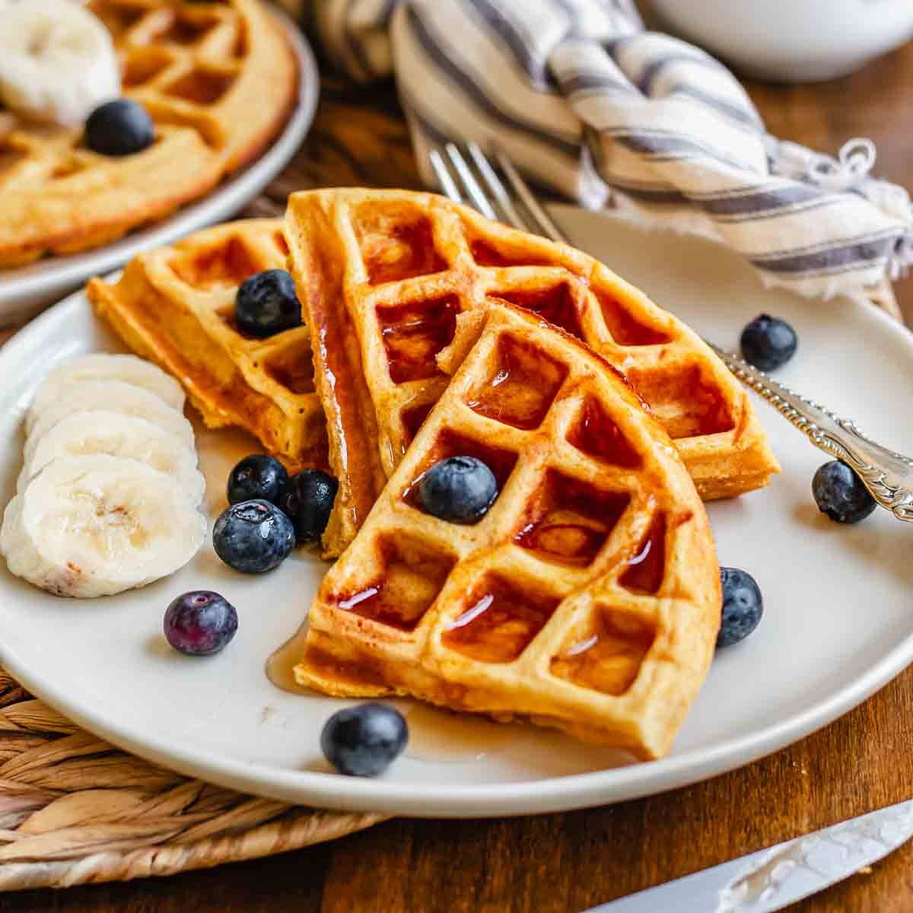

Explosively Delicious Waffles

First up on our list of impressively powerful meals: Belgian Waffles with a kick!
These waffles, though bitter at first, will no doubt explode with flavor! Just be careful
washing the plate. We wouldn't want the kitchen being reduced to rubble.
Ingredients
- 1 (.25 ounce) package active dry yeast
- 1/4 cup warm milk (110 degrees F/45 degrees C)
- 3 egg yolks
- 2 3/4 cups warm milk (110 degrees F/45 degrees C)
- 3/4 cup butter, melted and cooled to lukewarm
- 1/2 cup white sugar
- 1 1/2 teaspoons salt
- 2 teaspoons vanilla extract
- 4 cups all-purpose flour
- 3 egg whites
Steps
- In a small bowl, dissolve yeast in 1/4 cup warm milk. Let stand until creamy, about 10 minutes.
- In a large bowl, whisk together the egg yolks, 1/4 cup of the warm milk and
the melted butter. Stir in the yeast mixture, sugar, salt and vanilla. Stir in the
remaining 2 1/2 cups milk alternately with the flour,
ending with the flour. Beat the egg whites until they form soft peaks;
fold into the batter. Cover the bowl tightly with plastic wrap. Let rise in a warm
place until doubled in volume, about 1 hour.
- Preheat the waffle iron. Brush with oil and spoon about 1/2 cup
(or as recommended by manufacturer) onto center of iron. Close the lid and bake until
it stops steaming and the waffle is
golden brown. Serve immediately with fruitor keep warm in 200 degree oven.
Back to Index.